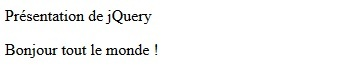

Avant toute interaction avec le DOM, il faut être capable de sélectionner n'importe quel élément, qu'importe où il se trouve sur une page web. Nous allons entrer dans le détail des différents principes de sélection.
Avec jQuery, la sélection d'éléments se fait de la même façon qu'avec des sélecteurs CSS.
Pour rappel, la syntaxe est la suivante : $('selecteur'). $ étant l'alias de jQuery().
Une méthode est ensuite appliquée à l'élément sélectionné : $('selecteur').methode().
Un sélecteur par identifiant commence par "#" et un sélecteur par classe commence par ".", suivi du nom du sélecteur.
Il est possible de sélectionner un élément par :
See the Pen Untitled by OpenSpirit (@OpenSpirit) on CodePen.
Pour aller plus loin, il est possible de sélectionner en profondeur dans le DOM, grâce à la notion de parent, frère et enfant. Pour cela, il sera possible d'appliquer deux techniques :
Pour rappel, une pseudo-classe est un mot-clé ajouté à la suite d'un sélecteur. Elle permet d'inclure l'état d'un élément dans la sélection et facilite certaines écritures.
See the Pen Untitled by OpenSpirit (@OpenSpirit) on CodePen.
See the Pen Untitled by OpenSpirit (@OpenSpirit) on CodePen.
Voici quelques-unes des pseudo-classes CSS les plus célèbres :
Parfois, des méthodes devront être appliquées à des éléments différents, avec des identifiants et des classes divers.
Au lieu de réécrire le code pour chaque élément, il est possible de lister les sélecteurs en les séparant par une virgule.
See the Pen Untitled by OpenSpirit (@OpenSpirit) on CodePen.
Ce sélecteur permet d'agir sur l'objet courant. Soit le code suivant :
See the Pen Untitled by OpenSpirit (@OpenSpirit) on CodePen.
Ici, nous écrivons "Bonjour tout le monde !" dans le paragraphe de notre div. Nous aurions pu écrire l'équivalent :
See the Pen Untitled by OpenSpirit (@OpenSpirit) on CodePen.
L'utilisation de this n'est possible qu'à partir d'une fonction anonyme, que nous passons en paramètre de la méthode utilisée.
this est passé en tant qu'objet à jQuery et non comme une chaîne de caractères : $(this) et non pas $('this').
Côté performance, nous préférerons les sélecteurs par identifiant, car ce dernier étant unique, il sera plus facilement ciblé dans le DOM.
See the Pen Untitled by OpenSpirit (@OpenSpirit) on CodePen.
Évitons, par exemple, les recherches trop générales sur des classes :
See the Pen Untitled by OpenSpirit (@OpenSpirit) on CodePen.
Utilisons plutôt la notion parent/enfant afin de cibler au mieux les éléments :
See the Pen Untitled by OpenSpirit (@OpenSpirit) on CodePen.